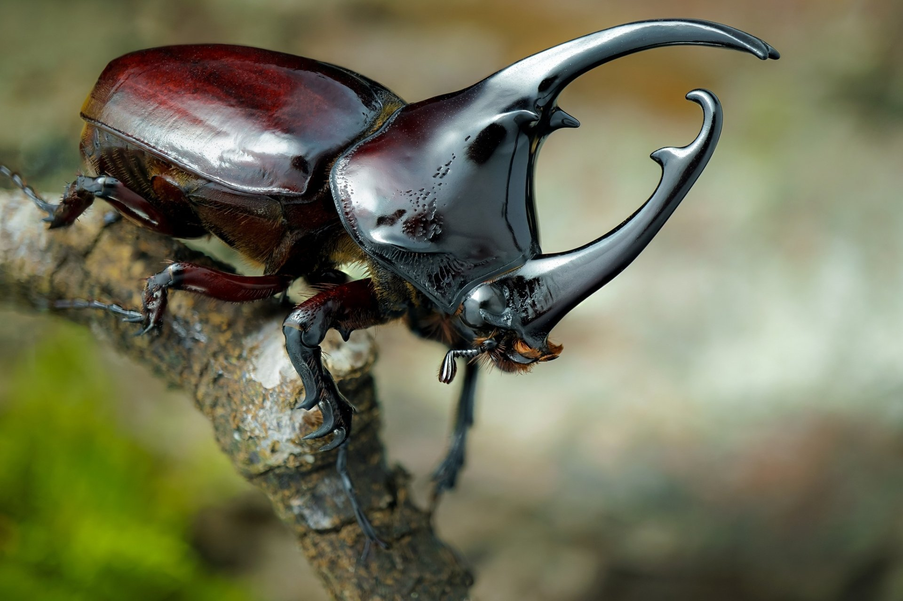

Home
Home Ants
Ants Bees
Bees Beetles
Beetles Butterflies
Butterflies Cockroaches
Cockroaches Flies
Flies Mosquitoes
Mosquitoes Spiders
Spiders Newsletter
NewsletterBeetles
Beetles are insects that form the order Coleoptera. Their front pair of wings are hardened into wing-cases called elytra, distinguishing them from most other insects. There are approximately 350,000 - 400,000 described species of beetles worldwide. Beetles represent about 25% of all known animal life-forms and roughly 40% of all described insect species.
Because there are so many beetle species to cover, use the tabs on the right to read more in-depth about specific beetle species.
Description
Rhinoceros beetles are herbivorous insects named for the horn-like projections on and around males' heads. Most are black, gray, or greenish in color, and some are covered in soft hairs. Another name given to some of these insects is the Hercules beetle beceause they possess a strength of Herculean proportion. Adults of some species can lift objects 30 times their own body weight without sacrificing speed. This would be the equivalent of a human having no problem carrying an adult male white rhinoceros. Some can even list up to 100 times their own weight, though they have trouble moving carry that much weight. Male beetles use this extreme strength to fight off other males and win the right to mate with females. Rhinoceros beetles can grow up to six inches in length, making them some of the largest beetles in the world.
Range
Rhinoceros beetles are found on every continent except Antarctica. In the United States, they live in the south from Arizona northeast to Nebraska and eastward. Leaf litter, plants, and fallen logs provide a safe shelter for rhinoceros beetles during the day.
Diet
All rhinoceros beetles are herbivorous. Adults feed on fruit, nectar, and sap. The larvae eat decaying plant matter.

Behavior
The horns of the male rhinoceros beetle are used to drive other males away from a female beetle during mating rituals. Females lay about 50 eggs, which hatch into larvae. After several molts, they eventually reach adult size and form. Longevity varies among species, but a typical lifespan is one to two years. Much of this may be spent in the larval stage.
Conservation
The beetles' population status probably varies among species. Rhinoceros beetles are collected as pets, and in some Asian countries, gamblers place bets on which of two male beetles will knock the other off a log.
Fun Fact
When disturbed, rhinoceros beetles can produce hissing squeaks. These aren’t actually vocal noises—instead, they’re produced when the beetle rubs its abdomen and wing covers together.
Source: National Wildlife Federation